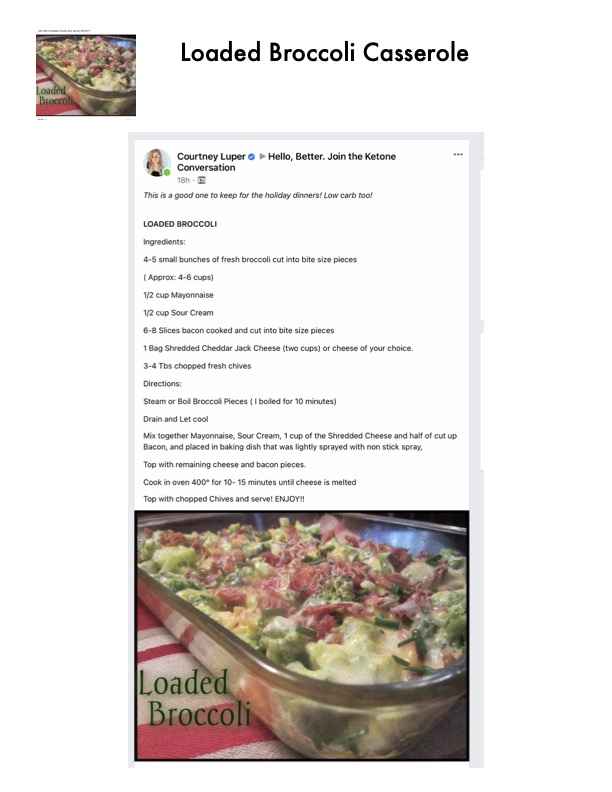

Loaded Broccoli Casserole

Original cookbook page 91
This is a good one to keep for the holiday dinners! Low carb too! A cheesy broccoli casserole loaded with bacon and topped with chives.
Cook: 10-15 minutes (in oven)
Ingredients
- 4–5 small bunches of fresh broccoli cut into bite size pieces (Approx: 4–6 cups)
- 1/2 cup Mayonnaise
- 1/2 cup Sour Cream
- 6–8 Slices bacon cooked and cut into bite size pieces
- 1 Bag Shredded Cheddar Jack Cheese (two cups) or cheese of your choice
- 3–4 Tbs chopped fresh chives
Instructions
- Steam or Boil Broccoli Pieces (I boiled for 10 minutes)
- Drain and Let cool
- Mix together Mayonnaise, Sour Cream, 1 cup of the Shredded Cheese and half of cut up Bacon, and placed in baking dish that was lightly sprayed with non stick spray.
- Top with remaining cheese and bacon pieces.
- Cook in oven 400° for 10–15 minutes until cheese is melted
- Top with chopped Chives and serve! ENJOY!!
Recipe #91 from collection